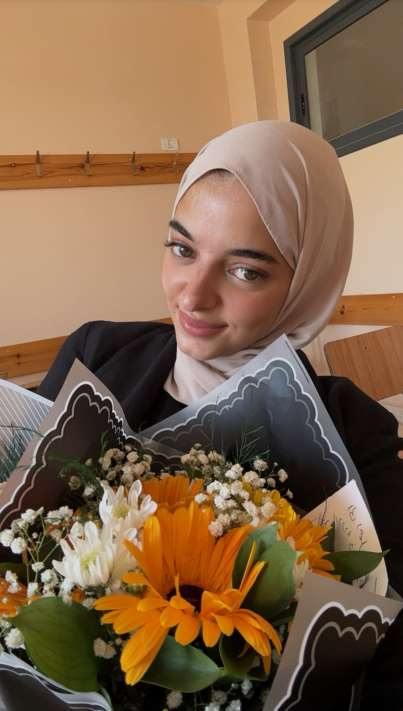

Hi! My full name is Sidrit-Almuntaha Fares, but you can call me Sedra.
I'm a second-year student majoring in Computer Science at AN-Najah National University.
click on the picture to discover more about the hobby!
when i get older
I often wonder what I will be when I get older. The truth is that only God knows.
But if you ask me a little deeper, I'll tell you that this is the hardest question for me.
I'm hoping for a happy, peaceful, and healthy life surrounded by the people I love,
focusing on myself and working in the field I'm passionate about, which is obviously programming!
I aim to achieve all my goals and dreams and to become a person who is remembered for the good things, of course.